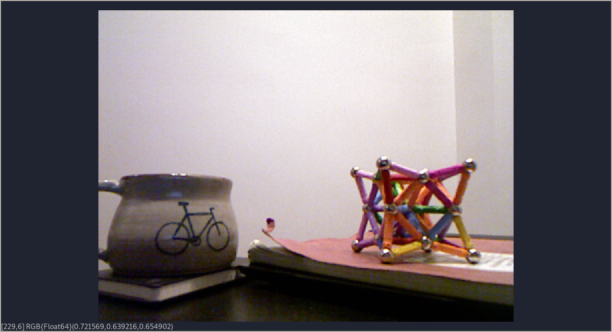
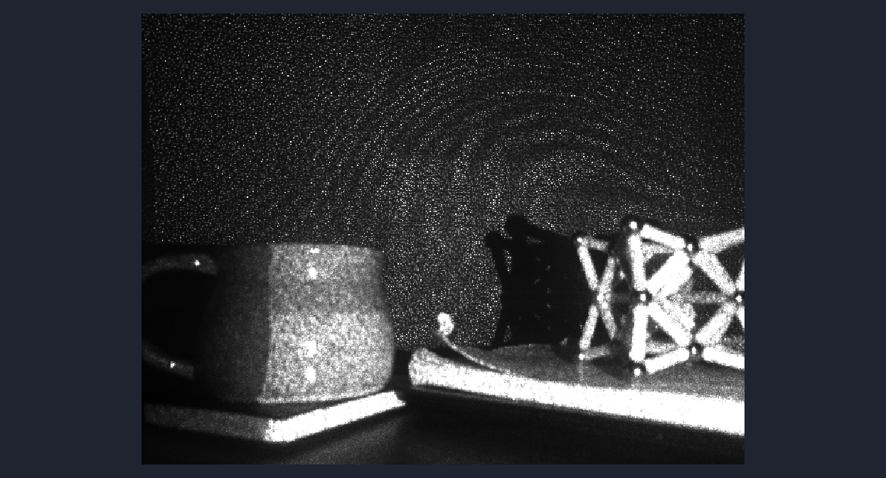
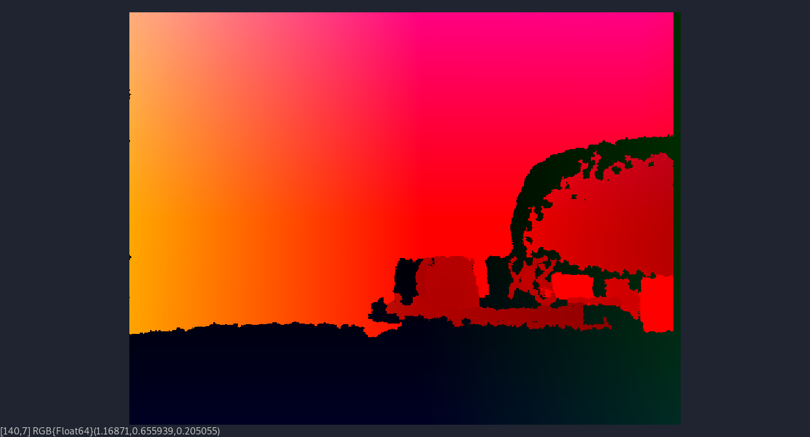

Displaying Images
Freenect.jl doesn't come with any image-specific utilities out of the box, it only returns arrays of data.
Here are some examples of using the JuliaImages suite to display data from the Kinect.
Before running these examples, be sure to install the relevant packages:
using Pkg
Pkg.add("Images")
Pkg.add("ImageView")RGB Image
using Freenect, Images, ImageView
image, timestamp = sync_get_video(0, video_rgb)
imshow(colorview(RGB, image ./ 255))
Infrared Image
using Freenect, Images, ImageView
image, timestamp = sync_get_video(0, video_ir_8bit)
imshow(colorview(Gray, image ./ 255))
Depth Image
These images often appear washed out when directly visualized, and anything below the minimum range appears in white.
using Freenect, Images, ImageView
depth, timestamp = sync_get_depth(0, depth_11bit)
imshow(colorview(Gray, depth ./ 2^11))
Point Cloud Image
While direct XYZ to RGB isn't the cleanest visualizer, it works in a pinch.
using Freenect, Images, ImageView
cloud, timestamp = sync_get_pointcloud(0)
imshow(colorview(RGB, cloud))